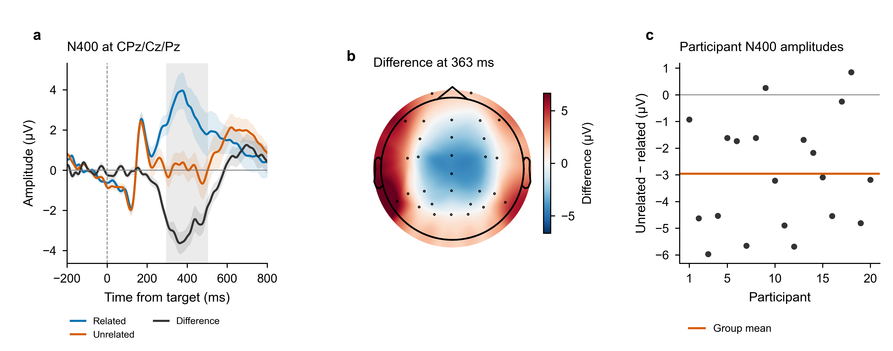

ern-flankers
N2, response-related negativity, frontal theta
MNE-Python · EEGLAB · FieldTrip
Reusable EEG analysis skills for coding agents.
Choose a workflow, approve the plan, and retain the executed code, results and report.
A fixed N400 tutorial, from a semantic-priming recipe to saved results from 20 ERP CORE participants.

Find a study recipe or an individual analysis skill. Open the source to inspect the inputs, methods and numerical conventions.
N2, response-related negativity, frontal theta
Auditory mismatch negativity
P300 to rare targets
Faces versus non-face controls
Upright versus inverted faces
Semantic priming
Posterior alpha modulation
Resting microstate maps and dynamics
Power spectra, aperiodic fits, connectivity
Continuous complexity and entropy
Filtering, reference, bad channels
ICA and component labeling
Segmentation and artifact rejection
ERPs and component measures
Time-frequency analysis
Power spectra and spectral parameters
Statistical inference
MVPA and temporal generalization
Behavioral and trial-level associations
Functional and directed connectivity
Maps and temporal dynamics
Entropy and complexity measures
Source localization
BIDS-EEG conversion
Data-quality checks
Group comparisons and effect sizes
Figures and data-fidelity checks
COBIDAS-MEEG methods text
Independent model review
Reports and reproducibility receipts
Analysis orchestration
Recipe execution and version tracking
No matching resources. Try another term or topic.
Recipe status and validation apply to the configurations recorded in each source. Validation coverage ↗
Use your own coding client and analysis environment.
The PyPI preview creates a new project with the AEA resources. Python 3.10+ and an existing MNE environment are required. The default package does not install the scientific dependencies.
python -m pip install auto-eeg-analysis==0.3.3rc2
aea-eeg init ./my-eeg-study --agent codex
cd my-eeg-study
codex$eeg-recipe n400-semantic --data .python -m pip install auto-eeg-analysis==0.3.3rc2
aea-eeg init ./my-eeg-study --agent claude
cd my-eeg-study
claude/eeg-recipe n400-semantic --data .Place compatible data in my-eeg-study/raw/, then start your signed-in coding client in that project. Choose the recipe for your paradigm and approve the plan before computation. Configure the reviewer for the audit stage.
git clone https://github.com/dengzhe-hou/Auto-EEG-Analysis.git
cd Auto-EEG-Analysis
conda env create -f environment.yml
conda activate aeais
python tools/install_skills.py --agent codex
codexInstall AEA 0.1.3 through the EEGLAB extension manager, or use the MATLAB toolbox preview. The native MATLAB route covers explicit ERP means from existing epochs. The broader library primarily uses MNE-Python.
Choose a recipe or skills and confirm the scientific choices.
The coding agent adapts and runs scripts in your environment.
Keep the executed code, numerical results, figures and review records.
Numerical comparisons are tied to documented settings and saved outputs.
Coverage is specific to the tested output and configuration. It does not certify every generated workflow.
Add a recipe, improve a skill, share a tutorial, or report a first run. The contribution guide explains the expected evidence and recognition policy.
Cite AEA with the software version or commit, and cite the original methods and datasets. The Zenodo record is the frozen 6 November 2026 resource and validation archive.